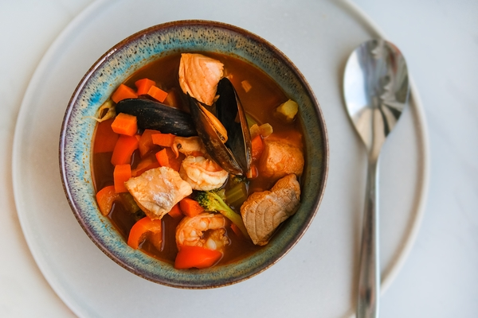
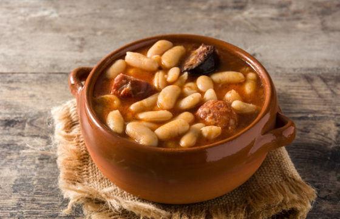
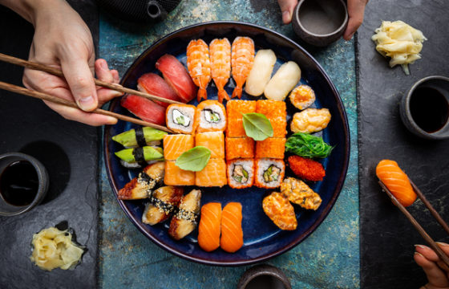

RECETAS DESTACADAS CON AOVE
Deliciosas recetas elaboradas con Aceite de Oliva Virgen Extra de España.
__________________________________________________________________________________________________________________________________________________________________
Sopa de pescado y marisco con aceite de oliva

Las sopas son recetas que siempre apetecen durante los meses más fríos del año, y la de pescado y marisco
no
es una excepción. Se trata de uno de esos platos reconfortantes que podemos servir en cualquier ocasión,
tanto si es para comer a lo largo de la semana como si lo queremos preparar durante un festivo.
Asimismo, se trata de una excelente forma de aprovechar esas partes del pescado que no utilizamos en
otras
elaboraciones culinarias. Una sopa de pescado y marisco, además, es una receta más sencilla de lo que
parece
y, aunque tendremos que dedicarle algo de tiempo, está al alcance de todo el mundo.
Por supuesto, siempre conviene prepararla con aceite de oliva de España y con verduras de calidad. Así,
el
sabor final que obtendremos será mucho más sabroso. A continuación, pues, vamos a explicar paso a paso
cómo
elaborar este delicioso plato con el que, sin duda, sorprenderemos a nuestros comensales.
__________________________________________________________________________________________________________________________________________________________________
Receta de fabada asturiana

La fabada asturiana es una de las recetas más tradicionales de la gastronomía del norte de la península
Ibérica. Es uno de esos platos que parecen haber estado ahí toda la vida, pero lo cierto es que su origen
data del siglo XVI. Su preparación, aunque simple, tiene su complicación, y es por eso que, a continuación,
te vamos a proporcionar una receta de fabada asturiana con la que tus comensales se chuparán los dedos.
__________________________________________________________________________________________________________________________________________________________________
Preparar sushi con aceite de oliva en casa

El sushi es uno de esos platos tradicionales de la gastronomía japonesa que han calado entre el público
español. Es por eso que mucha gente está deseando prepararlo en casa para disfrutarlo en cualquier momento.
A la hora de elaborar sushi con aceite de oliva en el hogar, pues, será importante la práctica, pero también
los ingredientes que vayamos a emplear.
Por eso, si confiamos en un buen arroz, aceite de oliva de España y la mejor verdura, podremos obtener un
sushi que estará para chuparse los dedos. Además, aunque es cierto que requiere un poco de técnica si
queremos obtener resultados profesionales, el sushi con aceite de oliva estará listo en muy poco tiempo, así
que podremos recurrir a esta receta cuando queramos. Por eso, vamos a ver cómo se prepara un sushi con
aceite de oliva, tortilla, aguacate y pepino.
__________________________________________________________________________________________________________________________________________________________________